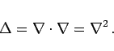

Inhalt Index DeskTop Bronstein

 Vektoranalysis und Feldtheorie Räumliche Differentialoperationen Nablaoperator, Laplace-Operator Laplace-Operator
Vektoranalysis und Feldtheorie Räumliche Differentialoperationen Nablaoperator, Laplace-Operator Laplace-Operator


Das Skalarprodukt des Nablaoperators mit sich selbst wird LAPLACE-Operator genannt:
|  | (13.72) |
Der LAPLACE-Operator ist kein Vektor. Er schreibt die Summierung der zweiten partiellen Ableitungen vor und kann sowohl auf skalare als auch auf vektorielle Funktionen angewandt werden. Die Form bleibt bei Translation und/oder Rotation des Koordinatensystems unverändert.